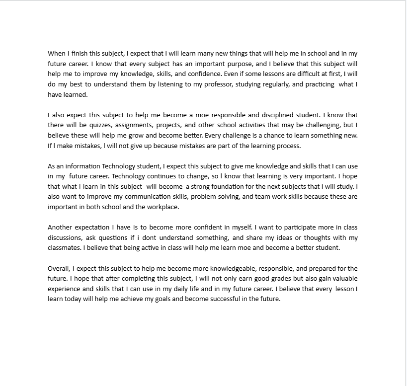
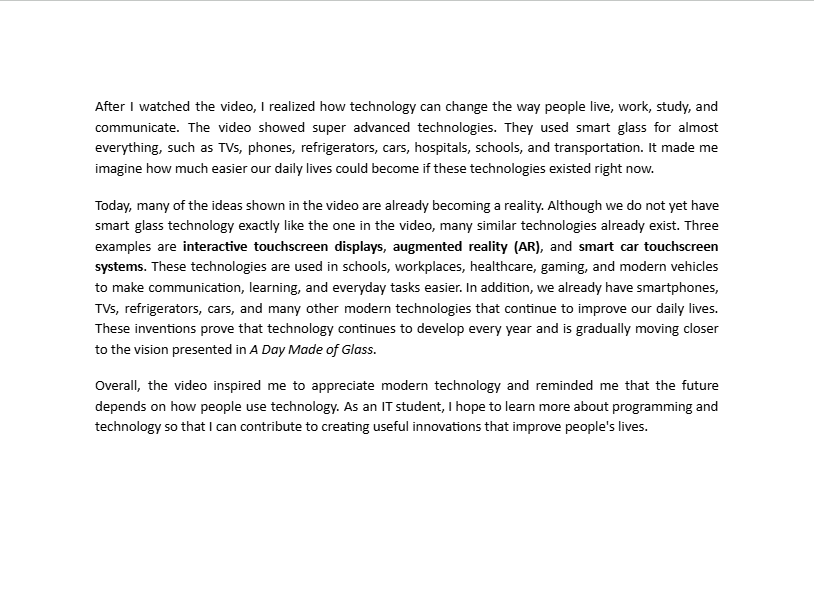
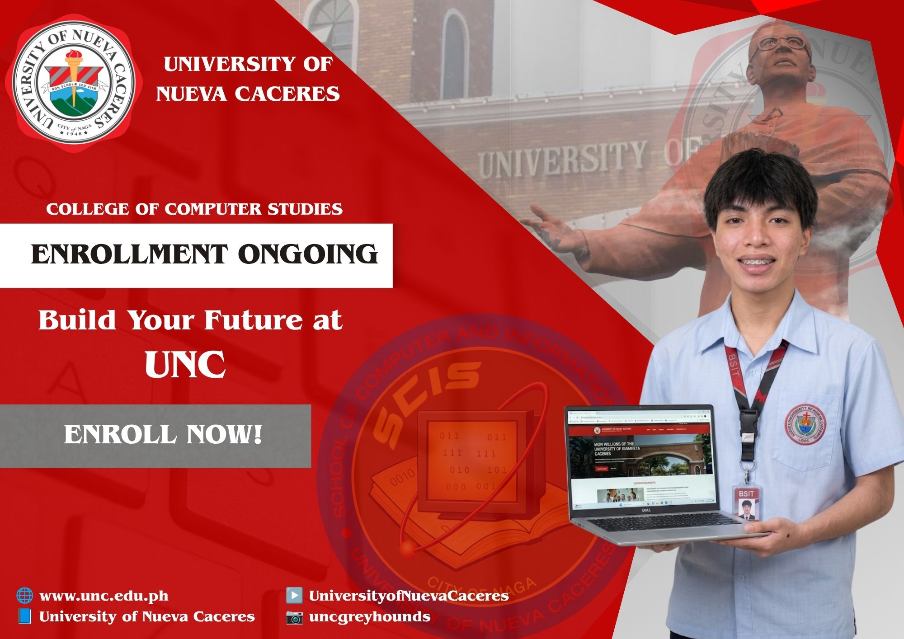
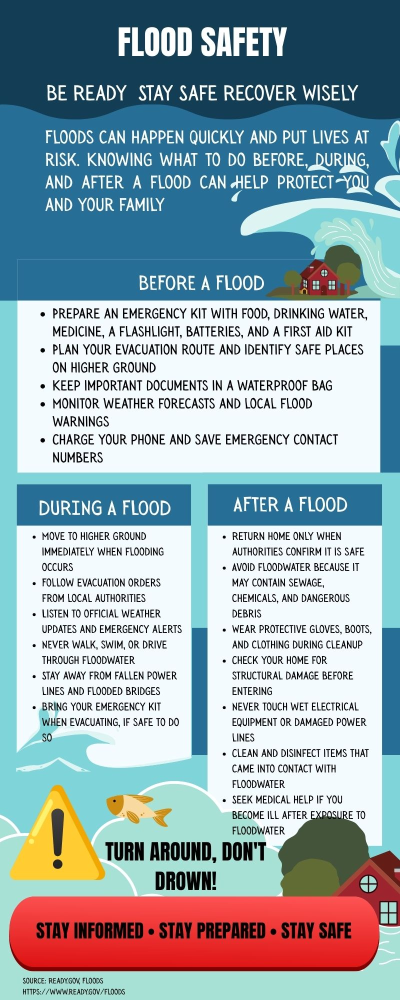
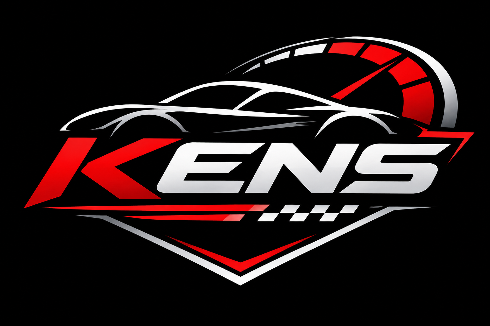

REFLECTION
Technology & Tomorrow
A reflection on smart technologies and how innovation can improve everyday life.
CREATIVE PORTFOLIO / 2026
VIDEO CLIPPER • EDITOR • CREATIVE
I turn ideas into engaging visuals through video editing, clipping, and creative design. I'm hardworking, trustworthy, and always ready to learn something new.
01 / VISUAL ARCHIVE
School activities, designs, written reflections, and creative experiments.

A reflection on smart technologies and how innovation can improve everyday life.

My goals for learning, developing discipline, and building confidence as an IT student.

A visual record of an activity and the ideas or lessons gained from participating.

A collection entry documenting my work and learning progress.
One of my activity outputs preserved as part of my student portfolio.

A visual output representing my continued learning and practice.
A promotional coffee poster exploring product layout, typography, and branding.
My documented activity output, available to view as a PDF.
Activity documentation shared as a PDF.
02 / THE PERSON BEHIND THE WORK
I'm Mark Keneth B. Pederio, an 18-year-old aspiring video editor and clipper. I graduated from high school at Naga College Foundation and enjoy learning creative skills like video clipping, editing, and poster design.
Starting out was not always easy. Clipping and editing took patience, practice, and attention to detail. Those challenges helped me become more determined to learn, experiment, and improve.
I'm hardworking, trustworthy, and open to new experiences. My goal is to grow my creative and technical skills, collaborate with others, and turn my passion for editing into a future career.
High school graduate · Naga College Foundation
Editing videos, creative design, technology, and learning new tools
03 / SELECTED WORK
Learning by doing, creating, and improving with every project.
Finding impactful moments, trimming footage, and shaping clips into clear and engaging content. The biggest challenge at the beginning was learning timing and choosing the right moments.
Designing promotional visuals with attention to composition, colors, typography, and communicating the message to an audience.
A simple game project documented with a gameplay screenshot and code preview. It gave me practice exploring logic and game mechanics.
A programming exercise that helped me practice operators, expressions, and logical conditions.
A written reflection on emerging technology and its potential impact on how people live, study, work, and communicate.
04 / LET'S CONNECT
I'm always ready to learn, collaborate, and take on new creative challenges.
Message Me on Facebook ↗